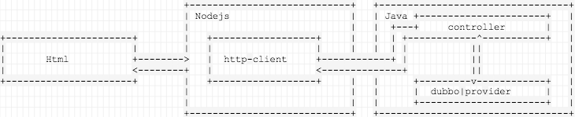
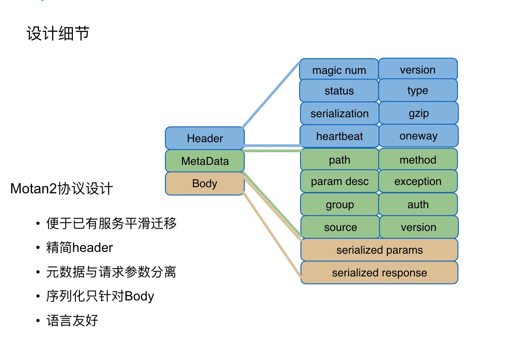
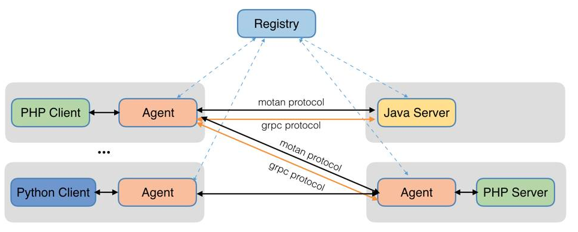
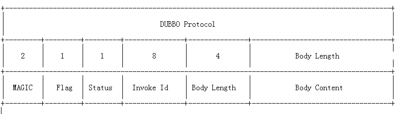

从跨语言调用到dubbo2.js
dubbo2.js 是 千米网 贡献给 dubbo 社区的一款 nodejs dubbo 客户端，它提供了 nodejs 对原生 dubbo 协议的支持，使得 nodejs 和 java 这两种异构语言的 rpc 调用变得便捷，高效。
微服务跨语言调用
微服务架构已成为目前互联网架构的趋势，关于微服务的讨论，几乎占据了各种技术大会的绝大多数版面。国内使用最多的服务治理框架非阿里开源的 dubbo 莫属，千米网也选择了 dubbo 作为微服务治理框架。另一方面，和大多数互联网公司一样，千米的开发语言是多样的，大多数后端业务由 java 支撑，而每个业务线有各自开发语言的选择权，便出现了 nodejs，python，go 多语言调用的问题。 跨语言调用是一个很大的话题，也是一个很有挑战的技术活，目前业界经常被提及的解决方案有如下几种，不妨拿出来老生常谈一番：
- spring cloud。spring cloud 提供了一整套微服务开发组件，它主要面向 java 开发，但由于其使用的协议是基于 restful 风格的 http 协议，这使得其天然具备跨语言能力，异构语言只需要提供 http 客户端，便可以实现跨语言调用。
- service mesh。号称下一代微服务框架的 service mesh，其解决跨语言问题的核心在于 SideCar ，SideCar 在 service mesh 的发展过程中概念不断的迁移，但本质都是完成了一件事：处理服务间通信，负责实现请求的可靠传递。
- motan。motan 是新浪微博开源的一款跨语言服务治理框架，在其早期版本中仅支持 motan-java，随着版本演进，在目前最新版本(1.1.0)中，提供了 motan-go，motan-php，motan-openresty 等跨语言特性。类似于 service mesh 中的 SideCar，motan 借助于 motan-go 作为 agent 完成协议的转发，并且依赖于定制协议：motan2，实现跨语言调用。
当我们再聊跨语言调用时我们在聊什么？纵观上述几个较为通用，成熟的解决方案，可以得出结论：解决跨语言调用的思路无非是两种：
- 寻找一个通用的协议
- 使用 agent 完成协议的适配
如果一个新型的团队面临技术选型，我认为上述的方案都可以纳入参考，可考虑到遗留系统的兼容性问题
- 旧系统的迁移成本
这也关键的选型因素。我们做出的第一个尝试，便是在 RPC 协议上下功夫。
通用协议的跨语言支持
springmvc的美好时代

在没有实现真正的跨语言调用之前，想要实现“跨语言”大多数方案是使用 http 协议做一层转换，最常见的手段莫过于借助 springmvc 提供的 controller/restController，间接调用 dubbo provider。这种方案的优势和劣势显而易见
- 优势是简单，是最通俗的解决方案。
- 劣势是使得调用链路变长，tcp 通信之上又多了一层 http 通信；开发体验差，为了将 rpc 接口暴露出去，需要额外编写一份 controller 层的代码。
通用协议的支持
事实上，大多数服务治理框架都支持多种协议，dubbo 框架除默认的 dubbo 协议之外，还有当当网扩展的 rest 协议和千米网扩展的 json-rpc 协议可供选择。这两者都是通用的跨语言协议。
rest 协议为满足 JAX-RS 2.0 标准规范，在开发过程中引入了 @Path，@POST，@GET 等注解，习惯于编写传统 rpc 接口的人可能不太习惯 rest 风格的 rpc 接口。一方面这样会影响开发体验，另一方面，独树一帜的接口风格使得它与其他协议不太兼容，旧接口的共生和迁移都无法实现。如果没有遗留系统，rest 协议无疑是跨语言方案最简易的实现，绝大多数语言支持 rest 协议。
和 rest 协议类似，json-rpc 的实现也是文本序列化&http 协议。dubbox 在 restful 接口上已经做出了尝试，但是 rest 架构和 dubbo 原有的 rpc 架构是有区别的，rest 架构需要对资源(Resources)进行定义， 需要用到 http 协议的基本操作 GET、POST、PUT、DELETE。在我们看来，restful 更合适互联网系统之间的调用，而 rpc 更适合一个系统内的调用。使用 json-rpc 协议使得旧接口得以兼顾，开发习惯仍旧保留，同时获得了跨语言的能力。
千米网在早期实践中采用了 json-rpc 作为 dubbo 的跨语言协议实现，并开源了基于 json-rpc 协议下的 python 客户端 dubbo-client-py 和 node 客户端 dubbo-node-client，使用 python 和 nodejs 的小伙伴可以借助于它们直接调用 dubbo-provider-java 提供的 rpc 服务。系统中大多数 java 服务之间的互相调用还是以 dubbo 协议为主，考虑到新旧协议的适配，在不影响原有服务的基础上，我们配置了双协议。
<dubbo:protocol name="dubbo" port="20880" />
<dubbo:protocol name="jsonrpc" port="8080" />
dubbo 协议主要支持 java 间的相互调用，适配老接口；json-rpc 协议主要支持异构语言的调用。
定制协议的跨语言支持
微服务框架所谓的协议(protocol)可以简单理解为：报文格式和序列化方案。服务治理框架一般都提供了众多的协议配置项供使用者选择，除去上述两种通用协议，还存在一些定制化的协议，如 dubbo 框架的默认协议：dubbo 协议以及 motan 框架提供的跨语言协议：motan2。
motan2协议的跨语言支持

motan2 协议被设计用来满足跨语言的需求主要体现在两个细节中—MetaData 和 motan-go。在最初的 motan 协议中，协议报文仅由 Header+Body 组成，这样导致 path，param，group 等存储在 Body 中的数据需要反序列得到，这对异构语言来说是很不友好的，所以在 motan2 中修改了协议的组成；weibo 开源了 motan-go ，motan-php，motan-openresty ,并借助于 motan-go 充当了 agent 这一翻译官的角色，使用 simple 序列化方案来序列化协议报文的 Body 部分（simple 序列化是一种较弱的序列化方案）。

仔细揣摩下可以发现这么做和双协议的配置区别并不是大，只不过这里的 agent 是隐式存在的，与主服务共生。明显的区别在于 agent 方案中异构语言并不直接交互。
dubbo协议的跨语言支持
dubbo 协议设计之初只考虑到了常规的 rpc 调用场景，它并不是为跨语言而设计，但跨语言支持从来不是只有支持、不支持两种选择，而是要按难易
程度来划分。是的，dubbo 协议的跨语言调用可能并不好做，但并非无法实现。千米网便实现了这一点，nodejs 构建的前端业务是异构语言的主战场，最终实现了 dubbo2.js，打通了 nodejs 和原生 dubbo 协议。作为本文第二部分的核心内容，重点介绍下我们使用 dubbo2.js 干了什么事。
Dubbo协议报文格式

dubbo协议报文消息头详解：
- magic：类似java字节码文件里的魔数，用来判断是不是 dubbo 协议的数据包。魔数是常量 0xdabb
- flag：标志位, 一共8个地址位。低四位用来表示消息体数据用的序列化工具的类型（默认 hessian），高四位中，第一位为 1 表示是 request 请求，第二位为 1 表示双向传输（即有返回 response），第三位为 1 表示是心跳 ping 事件。
- status：状态位, 设置请求响应状态，dubbo 定义了一些响应的类型。具体类型见
com.alibaba.dubbo.remoting.exchange.Response - invoke id：消息 id, long 类型。每一个请求的唯一识别 id（由于采用异步通讯的方式，用来把请求 request 和返回的 response 对应上）
- body length：消息体 body 长度, int 类型，即记录 Body Content 有多少个字节
- body content：请求参数，响应参数的抽象序列化之后存储于此。
协议报文最终都会变成字节，使用 tcp 传输，任何语言只要支持网络模块，有类似 Socket 之类的封装，那么通信就不成问题。那，跨语言难在哪儿？以其他语言调用 java 来说，主要有两个难点：
- 异构语言如何表示 java 中的数据类型，特别是动态语言，可能不存在严格的数据类型
- 序列化方案如何做到跨语言
dubbo2.js解决方案
上面我们分析出了两个难点，dubbo2.js 解决这两个问题的关键依赖于两个类库：js-to-java，hessian.js 。js-to-java 使得 nodejs 具备 java 对象的表达能力，而 hessian.js 提供了序列化能力。借助于 nodejs 的 socket ，妇科一套 dubbo 协议的报文格式，最终便实现了 nodejs 对 java-dubbo-provider 的调用。
dubbo2.js快速入门
为了让对 dubbo2.js 感兴趣的读者有一个直观的体验，本节呈现一个快速入门示例，让你体会到使用 dubbo2.js 调用 dubbo 服务是一件多么轻松的事。
1. 创建 dubbo-java-provider
后端 dubbo 服务使用 java 来提供，这服务大多数的业务场景。首先定义服务接口：
public interface DemoProvider {
String sayHello(String name);
String echo() ;
void test();
UserResponse getUserInfo(UserRequest request);
}
其次，实现服务：
public class DemoProviderImpl implements DemoProvider {
public String sayHello(String name) {
System.out.println("[" + new SimpleDateFormat("HH:mm:ss").format(new Date()) + "] Hello " + name + ", request from consumer: " + RpcContext.getContext().getRemoteAddress());
return "Hello " + name + ", response form provider: " + RpcContext.getContext().getLocalAddress();
}
@Override
public String echo() {
System.out.println("receive....");
return "pang";
}
@Override
public void test() {
System.out.println("test");
}
@Override
public UserResponse getUserInfo(UserRequest request) {
System.out.println(request);
UserResponse response = new UserResponse();
response.setStatus("ok");
Map<String, String> map = new HashMap<String, String>();
map.put("id", "1");
map.put("name", "test");
response.setInfo(map);
return response;
}
}
暴露服务：
<?xml version="1.0" encoding="UTF-8"?>
<beans xmlns:xsi="http://www.w3.org/2001/XMLSchema-instance"
xmlns:dubbo="http://code.alibabatech.com/schema/dubbo"
xmlns="http://www.springframework.org/schema/beans"
xsi:schemaLocation="http://www.springframework.org/schema/beans http://www.springframework.org/schema/beans/spring-beans-2.5.xsd
http://code.alibabatech.com/schema/dubbo http://code.alibabatech.com/schema/dubbo/dubbo.xsd">
<!-- 提供方应用信息，用于计算依赖关系 -->
<dubbo:application name="demo-provider"/>
<dubbo:registry protocol="zookeeper" address="localhost:2181"/>
<!-- 用dubbo协议在20880端口暴露服务 -->
<dubbo:protocol name="dubbo" port="20880"/>
<!-- 和本地bean一样实现服务 -->
<bean id="demoProvider" class="com.alibaba.dubbo.demo.provider.DemoProviderImpl"/>
<!-- 声明需要暴露的服务接口 -->
<dubbo:service interface="com.alibaba.dubbo.demo.DemoProvider" ref="demoProvider" version="1.0.0"/>
</beans>
我们完成了服务端的所有配置，启动启动类即可在本地注册一个 dubbo 服务。
public class Provider {
public static void main(String[] args) throws Exception {
ClassPathXmlApplicationContext context = new ClassPathXmlApplicationContext(new String[]{"META-INF/spring/dubbo-demo-provider.xml"});
context.start();
System.in.read();
}
}
2. 实现 nodejs 的 dubbo 客户端
安装 dubbo2.js：
npm install dubbo2.js --save
配置 dubboConfig.ts：
import { Dubbo, java, TDubboCallResult } from 'dubbo2.js'
const dubbo = new Dubbo({
application: {name: 'demo-provider'},
register: 'localhost:2181',
dubboVersion: '2.0.0',
interfaces: [
'com.alibaba.dubbo.demo.DemoProvider',
],
});
interface IDemoService {
sayHello(name: string): TDubboCallResult<string>;
}
export const demoService = dubbo.proxyService<IDemoService>({
dubboInterface: 'com.alibaba.dubbo.demo.DemoProvider',
version: '1.0.0',
methods: {
sayHello(name: string) {
return [java.String(name)];
},
echo() {},
test() {},
getUserInfo() {
return [
java.combine('com.alibaba.dubbo.demo.UserRequest', {
id: 1,
name: 'nodejs',
email: 'node@qianmi.com',
}),
];
},
},
});
使用 typescript 可以带来更好的开发体验。
编写调用类 main.ts：
import {demoService} from './dubboConfig'
demoService.sayHello('kirito').then(({res,err})=>{
console.log(res)
});
3. 执行调用
Debug 模式启动 nodejs 客户端：
DEBUG=dubbo* ts-node main.ts
查看运行结果：
Hello kirito, response form provider: 172.19.6.151:20880
Congratulation！
dubbo2.js特性
- 支持 zookeeper 注册中心
- 支持原生 dubbo 协议
- 支持服务直连
- 全链路跟踪
- dubbo 接口自动生成
更多细节
本文中的示例代码，提供在此处，https://github.com/lexburner/Dubbojs-Learning 。如果你对 dubbo 协议不慎了解，想要理解它的工作原理，项目中提供了一个子 moudle — java-socket-consumer，使用面向过程的思路实现了 java-socket-consumer，完成了原生 socket 发送 dubbo 协议报文，完成方法调用，并获取响应的全流程。